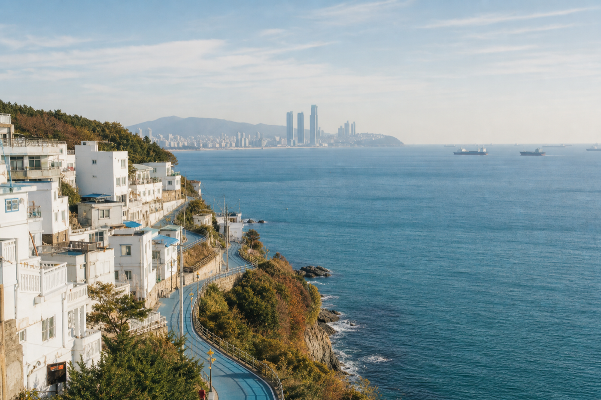
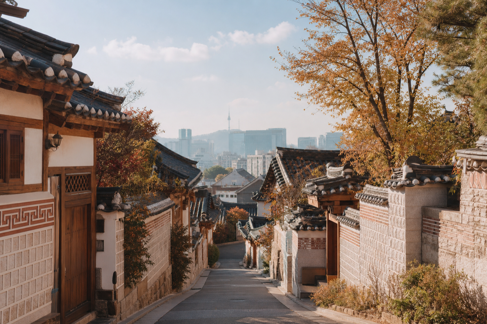

OCT. 01✈ FLIGHT
PVGPUS
上海浦东 → 釜山
航班号暂未确定
SEOUL35.17° NBUSAN
上海 ✦ 釜山 ✦ 首尔
2026.10.01 — 2026.10.07
01 / MOVING
从浦东起飞，沿着海岸抵达釜山，再搭一班列车去首尔。
PVGPUS
上海浦东 → 釜山
航班号暂未确定
PUSSEL
釜山 → 首尔
早餐后收拾行李、退房并前往釜山站
ICNPVG
首尔仁川 → 上海浦东
航班号暂未确定
02 / STAY
两间酒店都已经成为每日路线的出发点与回程落点。
Grand Josun Busan
292 Haeundaehaebyeon-rovoco Seoul Myeongdong
52 Toegye-ro03 / DAILY NOTES
点选地点状态，把期待一点点变成旅途里的真实记忆。


这个分类里暂时没有安排 ฅ՞•ﻌ•՞ฅ